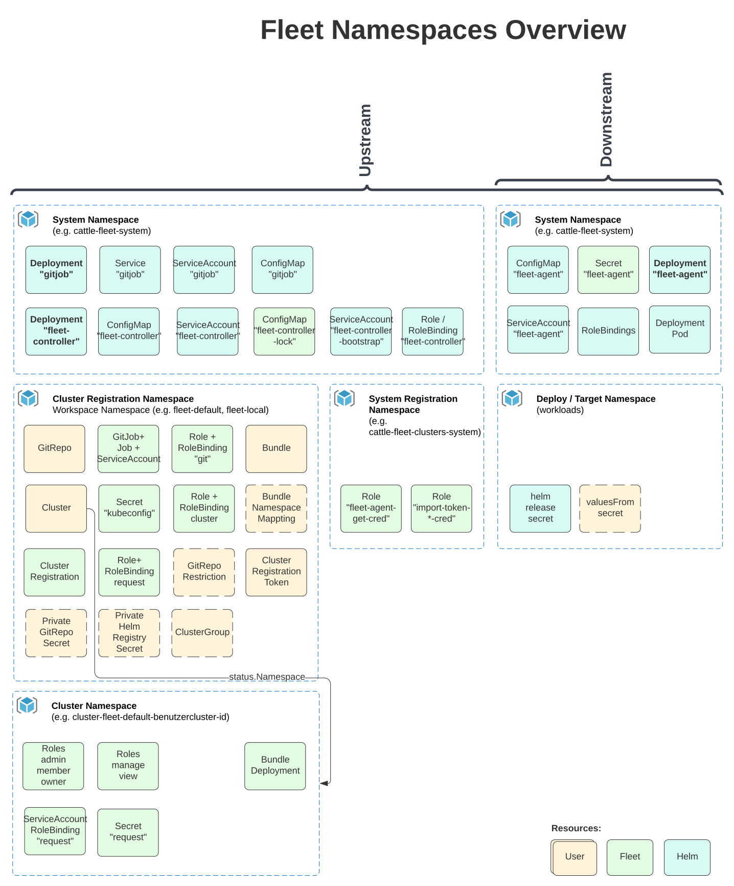

Espaces de noms
Espaces de noms de charge de travail
Comportement de création d’espace de noms dans les bundles
Lors du déploiement d’un bundle SUSE® Rancher Prime Continuous Delivery, l’espace de noms spécifié sera automatiquement créé s’il n’existe pas déjà.
Configuration des espaces de noms de charge de travail
Lors de la configuration des espaces de noms de charge de travail, il est important d’être conscient que certaines options sont conçues pour remplacer les valeurs d’autres options ou définitions d’espace de noms dans les ressources de charge de travail. Dans certains cas, définir des espaces de noms à l’aide de certaines options peut entraîner des erreurs si les ressources à déployer contiennent des ressources non associées à un espace de noms. Pour mieux comprendre comment ces options interagissent, consultez le diagramme ci-dessous. Pour plus de détails sur une option spécifique, veuillez vous référer au GitRepo ou à la référence fleet.yaml.

Déploiements inter-espaces de noms
Il est possible de créer un GitRepo qui déploiera à travers les espaces de noms. Le but principal de cela est qu’une équipe centrale privilégiée puisse gérer une configuration commune pour de nombreux clusters gérés par différentes équipes. La façon dont cela est accompli est en créant une ressource BundleNamespaceMapping dans un cluster.
Si vous créez une ressource BundleNamespaceMapping, il est préférable de le faire dans un espace de noms qui ne contient que GitRepos et pas de Clusters. Cela peut devenir confus si vous avez des clusters dans le même dépôt, car le GitRepos inter-espaces de noms sera toujours évalué par rapport à l’espace de noms actuel. Donc, si vous avez des clusters dans le même espace de noms, vous souhaiterez peut-être en faire des clusters canary.
Un BundleNamespaceMapping n’a que deux champs. Lesquels sont comme ci-dessous
kind: BundleNamespaceMapping
apiVersion: fleet.cattle.io/v1alpha1
metadata:
name: not-important
namespace: typically-unique
# Bundles to match by label. The labels are defined in the fleet.yaml
# labels field or from the GitRepo metadata.labels field
bundleSelector:
matchLabels:
foo: bar
# Namespaces to match by label
namespaceSelector:
matchLabels:
foo: barSi le champ BundleNamespaceMappings bundleSelector correspond à des étiquettes Bundles, alors ce critère cible Bundle sera évalué par rapport à tous les clusters dans tous les espaces de noms qui correspondent à namespaceSelector. On peut spécifier des étiquettes pour les paquets créés à partir de git en mettant des étiquettes dans le fichier fleet.yaml ou sur le champ metadata.labels dans le GitRepo.
Restriction des GitRepos
Un espace de noms peut contenir plusieurs ressources GitRepoRestriction. Toutes les GitRepos créées dans cet espace de noms seront vérifiées par rapport à la liste des restrictions. Si un GitRepo viole l’une des contraintes, son BundleDeployment sera dans un état d’erreur et ne sera pas déployé.
Cela peut également être utilisé pour définir les valeurs par défaut pour les champs serviceAccount et clientSecretName de GitRepo.
kind: GitRepoRestriction
apiVersion: fleet.cattle.io/v1alpha1
metadata:
name: restriction
namespace: typically-unique
allowedClientSecretNames: []
allowedRepoPatterns: []
allowedServiceAccounts: []
allowedTargetNamespaces: []
defaultClientSecretName: ""
defaultServiceAccount: ""Espaces de noms cibles autorisés
Cela peut être utilisé pour limiter un déploiement à un ensemble d’espaces de noms sur un cluster en aval. Si une restriction allowedTargetNamespaces est présente, tous les GitRepos doivent spécifier un targetNamespace et l’espace de noms spécifié doit être dans la liste autorisée. Cela empêche également la création de ressources à l’échelle du cluster.
Sélecteur d’espace de noms cible autorisé
allowedTargetNamespaceSelector restreint les déploiements aux espaces de noms sur les clusters en aval dont les étiquettes correspondent au sélecteur donné. Lorsque ce champ est défini dans un GitRepoRestriction, tous les GitRepos doivent spécifier un targetNamespace.
L’agent Fleet vérifie les étiquettes de cet espace de noms sur le cluster en aval avant de déployer un paquet :
-
Si l’espace de noms existe et que ses étiquettes correspondent au sélecteur, le déploiement se poursuit.
-
Si l’espace de noms existe mais que ses étiquettes ne correspondent pas, le
BundleDeploymentest -
défini sur un état d’erreur et le paquet n’est pas déployé.
-
Si l’espace de noms n’existe pas sur le cluster en aval, le déploiement échoue avec une erreur. La pré-création de l’espace de noms et son étiquetage correct sont requis ; l’option
createNamespacede Helm ne s’applique pas lorsque ce sélecteur est défini.
Plusieurs ressources GitRepoRestriction dans le même espace de noms contribuent chacune à leur allowedTargetNamespaceSelector. Les sélecteurs sont fusionnés avant d’être propagés aux déploiements de Bundles ; un espace de noms doit satisfaire à tous ceux-ci.
kind: GitRepoRestriction
apiVersion: fleet.cattle.io/v1alpha1
metadata:
name: restriction
namespace: project1
allowedTargetNamespaceSelector:
matchLabels:
team: frontendSUSE® Rancher Prime Continuous Delivery Espaces de noms
Tous les types dans le gestionnaire SUSE® Rancher Prime Continuous Delivery sont nommés par espace de noms. Les espaces de noms d’une ressource personnalisée, par exemple GitRepo, n’influencent pas l’espace de noms des ressources déployées.
Comprendre comment les espaces de noms sont utilisés dans le gestionnaire SUSE® Rancher Prime Continuous Delivery est important pour comprendre le modèle de sécurité et comment on peut utiliser SUSE® Rancher Prime Continuous Delivery de manière multi-locataire.

GitRepos, Bundles, Clusters, ClusterGroups
Tous les sélecteurs pour les cibles GitRepo seront évalués par rapport aux Clusters et ClusterGroups dans les mêmes espaces de noms. Cela signifie que si vous donnez des privilèges create ou update à un type GitRepo dans un espace de noms, cet utilisateur final peut modifier le sélecteur pour correspondre à n’importe quel cluster dans cet espace de noms. Cela signifie en pratique que si vous souhaitez que deux équipes gèrent elles-mêmes leurs propres enregistrements GitRepo mais qu’elles ne devraient pas pouvoir cibler les clusters des autres, elles devraient être dans des espaces de noms différents.
L’espace de noms d’enregistrement de cluster, appelé 'workspace' dans Rancher, contient les ressources Cluster et ClusterRegistration, ainsi que tout GitRepos et Bundles.
Rancher créera deux espaces de noms SUSE® Rancher Prime Continuous Delivery : fleet-default et fleet-local.
-
fleet-defaultcontiendra tous les clusters en aval qui sont déjà enregistrés via Rancher. -
fleet-localcontiendra le cluster local par défaut. L’accès àfleet-localest limité.
|
Informations importantes
La suppression de l’espace de travail, l’espace de noms d’enregistrement de cluster, supprimera tous les clusters dans cet espace de noms. Cela désinstallera tous les bundles déployés, sauf pour le Fleet agent, des clusters supprimés. |
Si vous utilisez SUSE® Rancher Prime Continuous Delivery dans un style cluster unique, l’espace de noms sera toujours fleet-local. Référez-vous à la section fleet-local espaces de noms pour plus d’informations.
Pour un style multi-cluster, veuillez vous assurer d’utiliser le bon dépôt qui sera mappé aux bons clusters cibles.
Espaces de noms internes
Espace de noms d’enregistrement de cluster : fleet-local
L’espace de noms fleet-local est un espace de noms spécial utilisé pour le cas d’utilisation d’un seul cluster ou pour démarrer la configuration du gestionnaire SUSE® Rancher Prime Continuous Delivery. L’accès au cluster local doit être limité aux opérateurs.
Lorsque SUSE® Rancher Prime Continuous Delivery est installé, l’espace de noms fleet-local est créé avec un Cluster appelé local et un ClusterGroup appelé default. Si aucun objectif n’est spécifié sur un GitRepo, il est par défaut ciblé sur le ClusterGroup nommé default. Cela signifie que tous les GitRepos créés dans fleet-local cibleront automatiquement le local Cluster. Le local Cluster fait référence au cluster sur lequel le gestionnaire SUSE® Rancher Prime Continuous Delivery s’exécute.
Espace de noms système : cattle-fleet-system
Le contrôleur SUSE® Rancher Prime Continuous Delivery et l’agent SUSE® Rancher Prime Continuous Delivery s’exécutent dans cet espace de noms. Tous les comptes de service référencés par GitRepos sont censés vivre dans cet espace de noms dans le cluster en aval.
Espace de noms d’enregistrement système : cattle-fleet-clusters-system
Cet espace de noms contient des secrets pour le processus d’enregistrement du cluster. Il ne devrait contenir aucune autre ressource, en particulier des secrets.
Espaces de noms de cluster
Pour chaque cluster enregistré, un espace de noms est créé par le gestionnaire SUSE® Rancher Prime Continuous Delivery pour ce cluster. Ces espaces de noms sont nommés sous la forme cluster-${namespace}-${cluster}-${random}. Le but de cet espace de noms est que tous les BundleDeployments pour ce cluster soient placés dans cet espace de noms, puis le cluster en aval se voit accorder l’accès pour surveiller et mettre à jour BundleDeployments uniquement dans cet espace de noms.